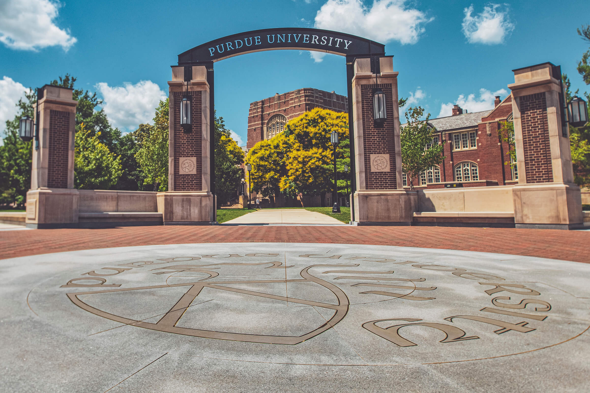

About
Hi, I am Ben! I was born in Boston, Massachusetts and lived there for the first few years of my life unitl I moved to a small town on the beach in New Hampshire. I lived there for the rest of my childhood until I ventured off to West Lafayette, Indiana to begin my undergraduate education at Purdue University. In August of 2019, I began my freshman year. I came to campus not knowing a single person or even where different buildings were located. That all changed quickly, as Purdue soon became home to me and the place where I have made some of my greatest friendships and memories.
In my 4 years at Purdue, I also excelled academically. Coming in with very limited knowledge about computer science and coding, I was nervous, but those nerves quickly tempered as classes began and I got the hang of things. Since then, I've learned more than I ever could have imagined. I've grasped and become proficient in many complex languages and technologies, building my skillset piece by piece into what it is today. These skills I've gained during my time at Purdue have allowed me to gain experience in the industry, which has been so valuable to me.
In May 2023, I completed my undergrad at Purdue University, earning a Bachelor's of Science in Computer Science with a concentration in machine learning and artificial intelligence, along with a minor in mathematics.
Education

PURDUE UNIVERSITY
West Lafayette, IN
August 2019 - May 2023
Bachelor of Science in Computer Science
Minor in Mathematics
Concentration in Machine Intelligence
3.43/4.00 GPA
Honors: Dean's List and Semester Honors - Fall 2019, Fall 2020, Spring 2023
Relevant Courses:
- CS 18000 - Problem Solving and Object Oriented Programming
- CS 19300 - Tools
- CS 18200 - Foundations Of Computer Science
- CS 18200 - Foundations Of Computer Science
- CS 24000 - Programming in C
- CS 25000 - Computer Architecture
- CS 25100 - Data Structures and Algorithms
- CS 25200 - Systems Programming
- CS 34800 - Information Systems
- CS 37300 - Data Mining and Machine Learning
- CS 38100 - Introduction to the Analysis of Algorithms
- CS 44800 - Introduction to Relational Database Systems
- CS 47100 - Introduction to Artificial Intelligence
- MA 16100 - Plane Analytic Geometry And Calculus I
- MA 16200 - Plane Analytic Geometry And Calculus II
- MA 26100 - Multivariate Calculus
- MA 26500 - Linear Algebra
- MA 34100 - Foundations of Analysis
- STAT 41600 - Probability
- STAT 51100 - Statistical Methods
Experience
DepBot
Portsmouth, NH
May 2022 - Aug 2022
Software Engineering Intern
- Worked within a team of developers to code a CLI agent that identifies code-based dependency vulnerabilities in a given source code repository
- Wrote robust documentation on the installation process, initial setup, architecture, and features of the UI dashboard
- Conducted rigorous competitive analysis research to identify 5+ potential competitors and help mold the marketing strategy
Computer Science Learning Community
Purdue University
Aug 2020 - May 2022
Undergraduate Student Mentor
- Organized and led 100-person review sessions for midterm exams in freshman computer science courses
- Facilitated 20+ extra help sessions to better help freshman learn and understand complex data structures and graphical user interfaces in Java and C
Purdue Solutions
West Lafayette, IN
Jan 2020 - June 2020
Associate Consultant
- Held meetings with clients to identify ways to improve efficiency, which resulted in an increase of traffic by 70% and streamlined the onboarding process
Skills
Languages:
- Python
- Java
- C
- C++
- JavaScript
- Go
- Bash
- MySQL
- HTML
- CSS
- R
Technologies and Frameworks:
- MySQL Workbench
- MongoDB
- PostgreSQL
- Neo4j
- Excel
- Accurev
- Git
- Jupyter Notebook
- React
Projects
You can check out my personal projects as well as some of my projects for classes here.
Resume

Contact

Email: bfburke11@gmail.com
Phone: 603-583-0815